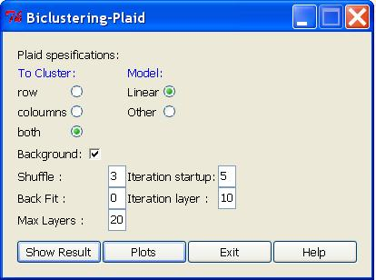

Plaid Biclustering
The Plaid algorithm is proposed by Turner et al. (2005) as an improvement of the plaid model discussed by Lazzeroni and Owen (2000). The plaid model defines the data structure (e.g,. expression level) as a sum of layers. These layers are then constructed as biclusters.
Plaid Biclustering dialox Box:

Plaid Specifications:
- To cluster: Option whether we want to cluster only rows, only columns or both: rows and columns.
- Model: Specifies the plaid model that we want to use. Background: specify if the background layer (constant for all rows and columns) is present in the data matrix.
- Shuffle: Before a layer is added, it's statistical significance is compared against a number of layers obtained by random defined by this parameter.
- Back Fit: Specifies additional iterations that will be done to refine the fitting of the layer.
- Iteration startup: Defines Number of iterations to find starting values.
- Iteration layer: Defines Number of iterations to find each layer.
- Max layers: Defines the maximum number of layer to include in the model.